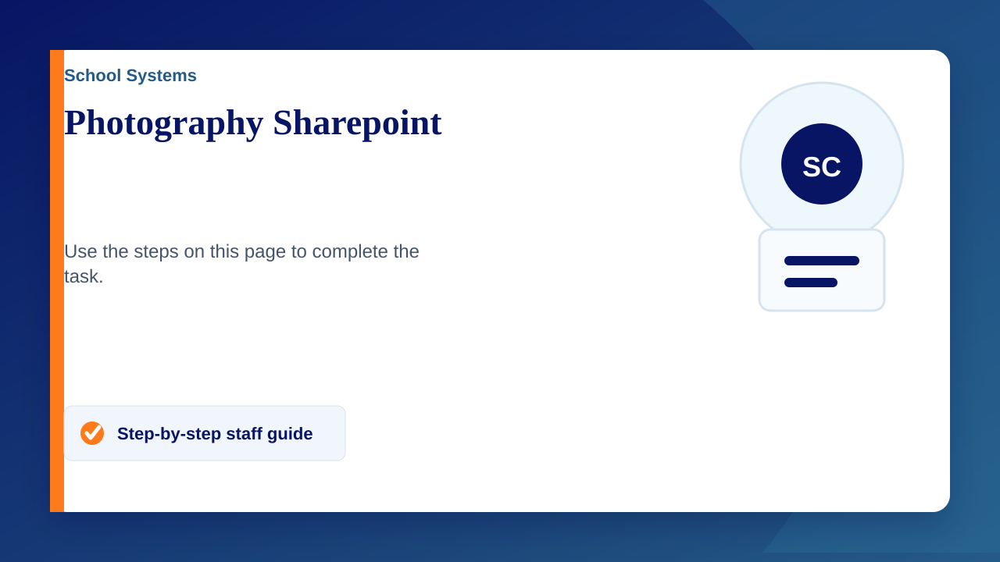

Accessing a SharePoint Site
- Go to office.com and sign in with your school account
- Once logged in, click on the SharePoint icon from the list of apps.
- From the sharepoint homepage click on "Photography"
Adding a SharePoint Shortcut to OneDrive (Without Syncing Files)
- Follow the steps above to access your SharePoint site.
- Go to the document library (or folder) that you want to create a shortcut for.
- In the document library, select the folder you want to add as a shortcut.
- Click on the "Add shortcut to OneDrive" button usually found at the top menu bar.
If you don't see this option, click on the ellipsis (three dots) next to the folder and then select "Add shortcut to OneDrive" from the dropdown menu.
Accessing the Shortcut in OneDrive
- Open file explorer (yellow folder)
- Click on OneDrive
- Shortcut files can be found here
Accessing the Shortcut in OneDrive (online)
- Go to https://claremontschoolcouk-my.sharepoint.com/
- In your OneDrive, you will see the added shortcut in the main directory. It will appear with a link icon indicating it is a shortcut.
Ensure that you do not click the "Sync" button in the OneDrive web interface, which would start the syncing process.